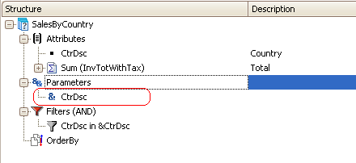
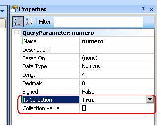

Here are the types of Parameters availables for queries, its definition, possible values and examples of each case through the Query object's Parameters node, as illustrated by the example below:

Parameter types:
| Boolean |
| Value (true - false) |
| Character |
| Length |
| Value |
| Date |
| Date Value |
| Date Format (none - 99/99/99 - 99/99/9999) |
| DateTime |
| Date Value |
| Date Format (none - 99/99/99 - 99/99/9999) |
| Hour Format (hh - hh:mm - hh:mm:ss) |
| LongVarChar and VarChar |
| Value |
| Numeric |
| Length |
| Decimals |
| Signed (true - false) |
| Value |
Note: all parameter types can be defined as a collection using the property Is Collection. When the value of it is True, property Collection Value is enabled:

To learn more about how to define runtime parameters read here.
| Backlinks | |
| Category:Query object | Toc:Reporting in GeneXus |